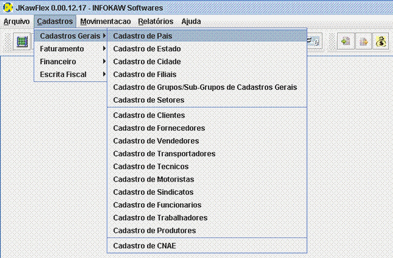
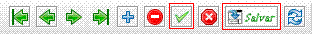

|  | 1. Para efetuar o CADASTRO DE PA�S, selecione na barra de Menu a opção CADASTROS, em seguida CADASTROS GERAIS, e CADASTRO DE PA�S. |
| 2. Antes de preencher os campos, clique em INSERIR NOVO REGISTRO situado na barra de Op��es. | |
|  | 3. Ap�s preencher os campos, clique no bot�o VALIDAR REGISTRO CORRENTE situado na barra de Op��es, e em seguida clique no bot�o SALVAR. |